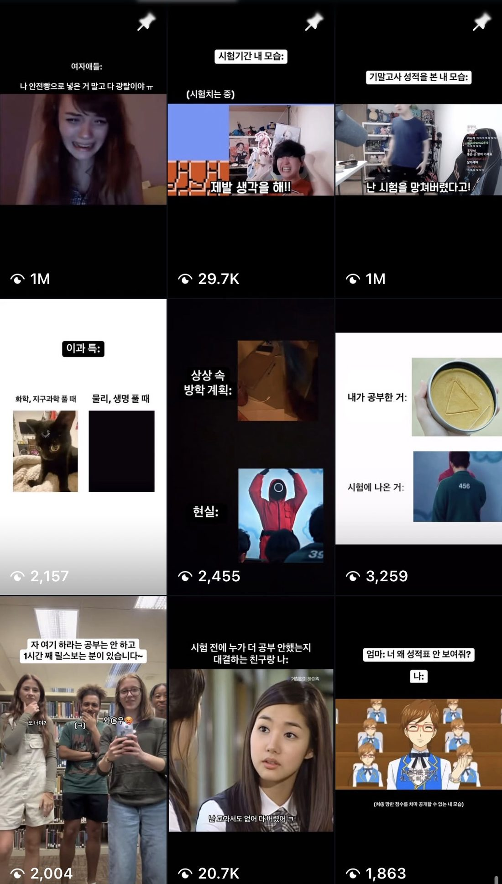
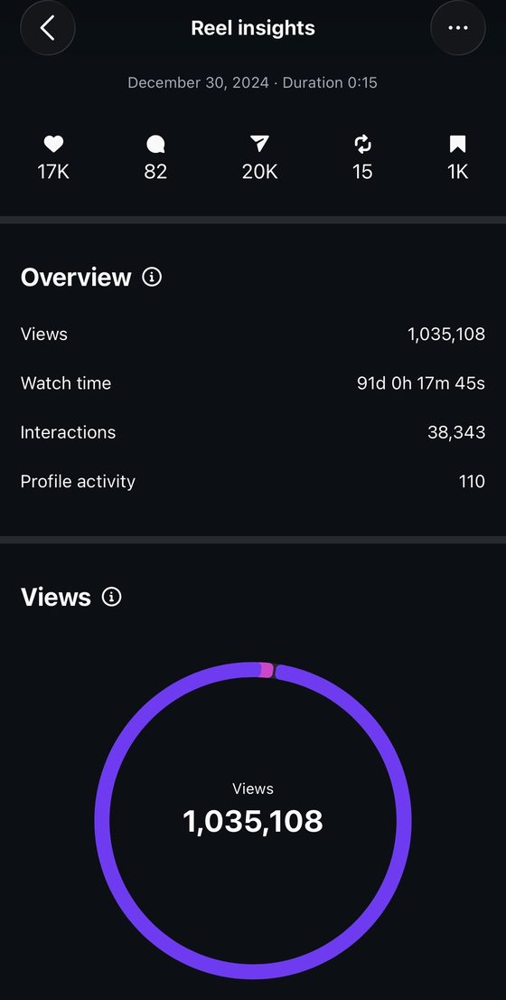
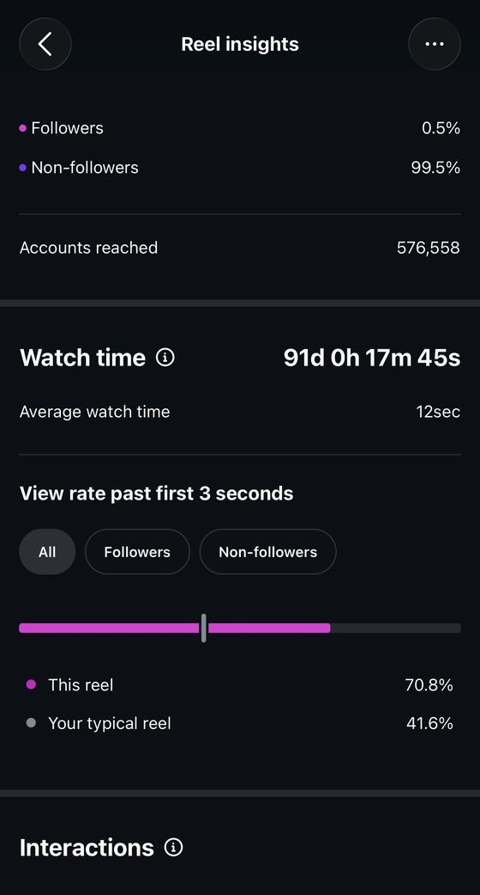
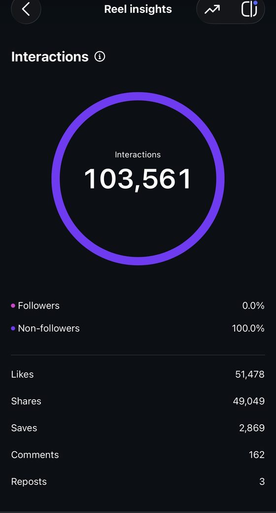
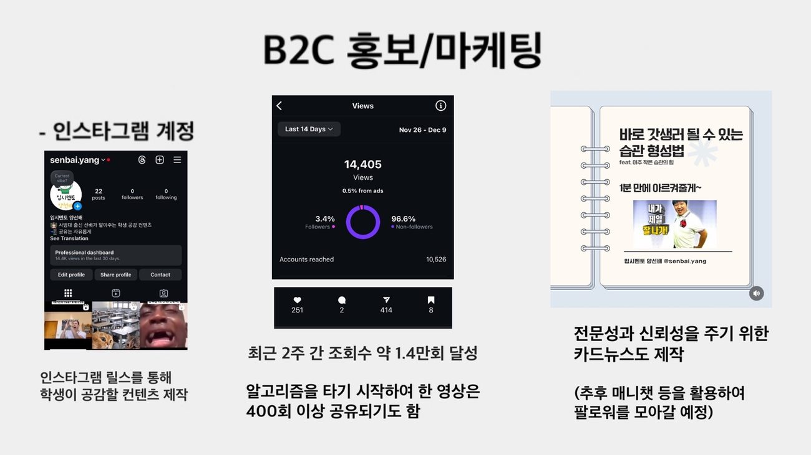
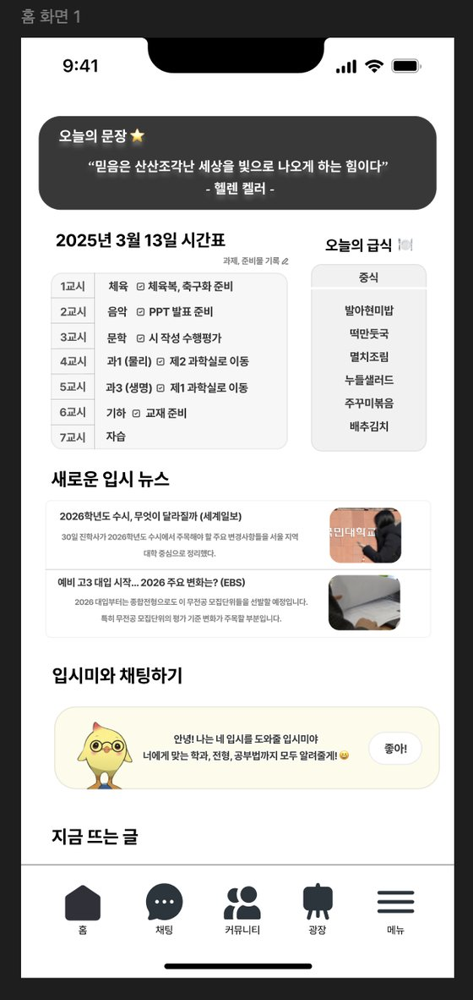
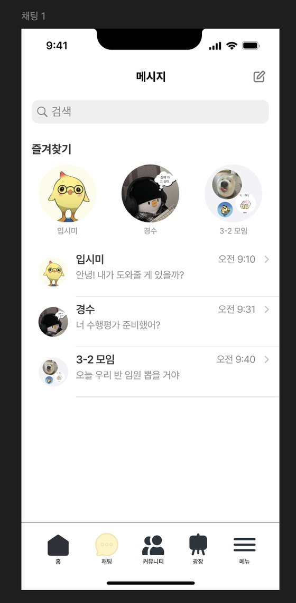
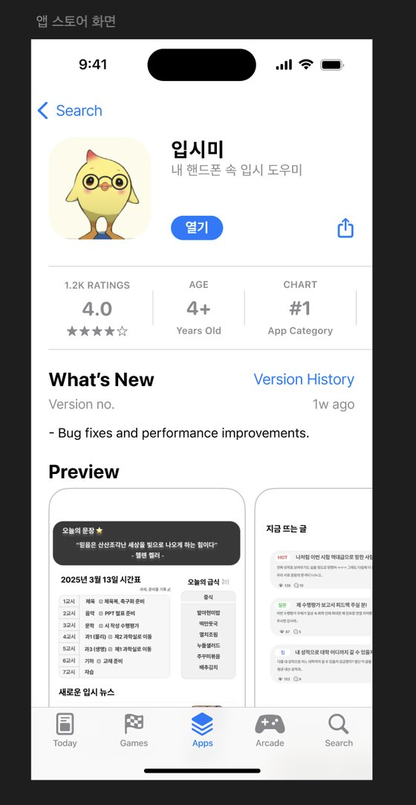
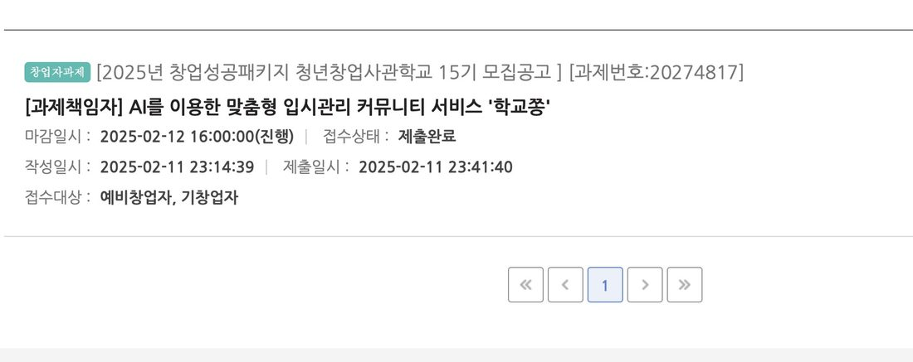
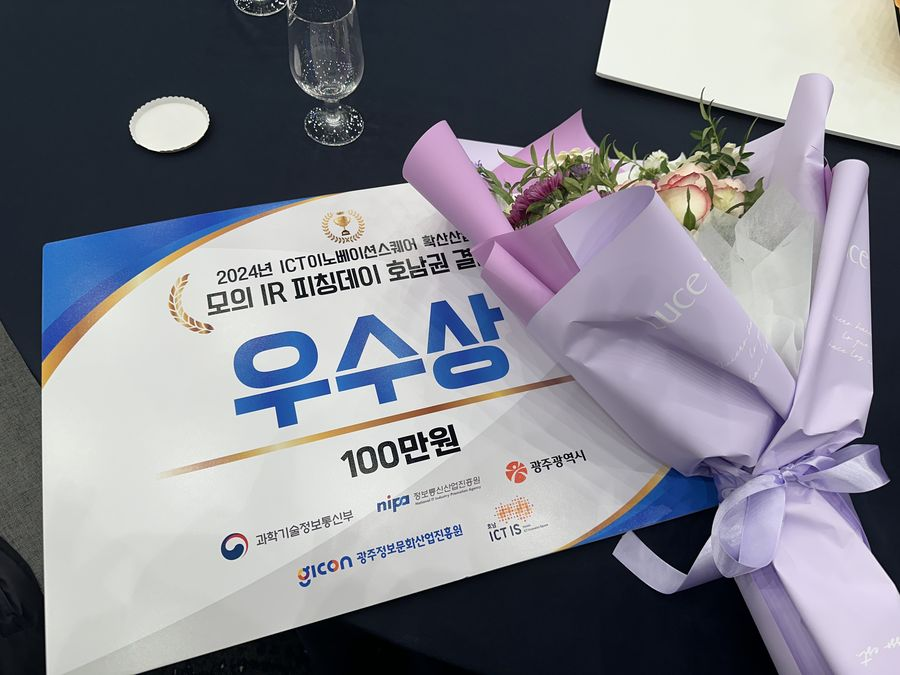

하나의 서비스, 세 개의 이름
고등학생의 수행평가·입시 준비를 돕는 서비스입니다.
단계에 따라 이름이 바뀌었기 때문에 먼저 정리합니다.
| 수행쌤 | 처음 시작한 이름. 보고서 작성을 코칭하는 컨설팅·챗봇 서비스로 출발했습니다 |
| 학교쫑 | 중간에 변경한 서비스명. 커뮤니티까지 포함한 입시관리 서비스로 범위를 넓혔습니다 |
| 입시미 | 학교쫑 사업에서 실제로 출시한 애플리케이션입니다 |
시간 순서
- 2024.11 — IR 피칭데이 우수상ICT 이노베이션스퀘어 확산사업 모의 IR 피칭데이 호남권 결선, 상금 100만원
- 2024.11~12 — 인스타그램 계정 육성개설 2주 1.4만 조회에서 시작해 12월에 100만 조회 릴스 2편
- 2024.12 — 서비스 사전 판매수행평가 컨설팅 상품 43건 판매 · 후기 5.0
- 2025.01~02 — 앱 UI 설계 및 개발 협업와이어프레임과 플로우차트부터 실제 화면까지 피그마로 설계, 개발자 팀과 프로토타입 구현
- 2025.02 — 청년창업사관학교 15기 지원8페이지 사업계획서 직접 작성 및 제출
입시 정보는 넘치는데, 학생은 자기 것을 못 찾는다
고교학점제 도입으로 학교 활동과 보고서의 비중이 커졌지만, 정보 공급이 과잉되면서 학생은 자신에게 맞는 정보를 고르기 어려워졌습니다. 대안인 1:1 입시 컨설팅은 지역과 비용의 벽이 있습니다.
| 입시 정보를 이해하기 어렵다 | 90% |
| 나에게 맞는 정보를 찾기 어렵다 | 75% |
| 컨설팅 업체의 학군지 내 영업 비율 | 85% |
| 컨설팅 평균 비용 | 시간당 40만원 |
고등학교 1~3학년 107명 대상 자체 조사.
팀에서 협업 중인 학원의 재원생과 과외 학생을 대상으로 진행했습니다.
서비스를 알리기 전에, 학생이 모이는 자리를 먼저 만든다
인지도가 0인 신규 서비스였습니다. 처음부터 입시 정보를 올리면 아무도 보지 않는다고 판단하고, 계정을 3단계로 설계했습니다.
- 공감 콘텐츠로 도달 확보중고등학생이 자기 이야기라고 느낄 시험·성적·방학 소재의 짧은 영상
- 계정을 자산으로 전환카드뉴스로 전문성과 신뢰를 쌓고, 메시지 자동화로 팔로워 확보
- 서비스 홍보 채널로 활용확보한 계정을 입시미·학교쫑 유입 경로로 사용
아래 성과는 1단계의 결과입니다. 2·3단계는 설계까지 마쳤고,
회고 항목에 도달하지 못한 이유를 정리했습니다.
같은 포맷, 500배 차이
같은 형식으로 올린 콘텐츠의 조회수가 1,863회부터 100만 회까지 벌어졌습니다.
차이는 소재가 아니라 초반 훅 장면의 유무였습니다.

훅이 있는 콘텐츠
첫 화면에서 상황이 즉시 드러나 학생이 자기 이야기로
인식합니다. 시험 직후, 성적표를 받은 순간처럼 시점이
뾰족합니다.
훅이 없는 콘텐츠
상황 설명이 먼저 나와 초반에 이탈합니다. 같은 소재여도 도입 한 장면이 빠지면 조회수가 자릿수 단위로
떨어집니다.
2주 만에 계정 평균 유지율이 9.4%p 올랐다
12월 13일과 30일에 각각 100만 조회를 넘긴 릴스 2편입니다.
두 번째 영상은 앞선 영상의 이탈 구간을 참고해 도입부를 다시 짰습니다.
| 지표 | 12/13 · 9초 | 12/30 · 15초 |
|---|---|---|
| 조회수 | 1,022,469 | 1,035,108 |
| 도달 계정 | 589,203 | 576,558 |
| 공유 | 49,049 | 19,930 |
| 좋아요 | 51,478 | 17,296 |
| 저장 | 2,869 | 1,020 |
| 3초 시청 유지율 | 41.6% | 70.8% |
| 계정 평균 유지율 | 32.2% | 41.6% |
| 비팔로워 도달 비중 | 88.2% | 99.5% |
읽어야 할 지점
- 비팔로워 도달 99.5% — 기존 팔로워가 아니라 새로운 학생에게 닿는 것이 목표였고, 그대로 달성했습니다.
- 공유가 좋아요와 맞먹는 규모 — 학생들이 친구를 태그하며 퍼뜨렸다는 뜻입니다. 타깃이 정확했다는 가장 확실한
증거입니다. - 유지율 70.8% — 계정 평균의 1.7배. 도입부를 고친 것이 수치로 확인됐고, 계정 평균 자체도 32.2%에서 41.6%로 올랐습니다.



시작 시점의 계정 상태: 개설 2주간 조회 14,405 · 도달 10,526 · 비팔로워 96.6%.
웃기는 계정에서 믿을 만한 계정으로
공감 콘텐츠만으로는 입시 서비스를 팔 수 없습니다. 같은 계정 안에서 습관·공부법 같은 실용 정보를 카드뉴스로 발행해 신뢰를 쌓는 것을 2단계로 설계했습니다.

만들기 전에 팔아봤다
앱을 개발하기 전, 수요가 실재하는지 두 가지로 확인했습니다.
| 사전 판매 (2024.12.09~16) | 43건 | 후기 5.0 · 39,900원 → 9,900원 |
| AI 프로토타입 테스트 | 51명 | 만족 86% · 재사용 의향 80% |
랜딩페이지와 소개 영상을 직접 만들어 판매까지 붙였고, 챗GPT 기반 프로토타입은 학원 특강
현장에서 학생에게 직접 사용시킨 뒤 만족도를 받았습니다.
학생이 매일 열 이유부터 설계했다
입시 상담만 있는 앱은 필요할 때만 열립니다. 시간표·급식·커뮤니티처럼 매일 확인할 것을 홈에 두고, 그 흐름 안에서 AI와 만나도록 구성했습니다. 와이어프레임과 플로우차트부터 실제 화면까지
피그마로 설계하고, 부트캠프 개발자 팀과 협업해 프로토타입까지 구현했습니다.



내가 만든 조회수가 사업계획서의 근거가 됐다
2025년 2월, 청년창업사관학교 15기에 '학교쫑'으로 지원했습니다. 8페이지 사업계획서를 직접
작성했고, 시장 진입 전략 항목은 그동안 운영한 SNS 실적을 근거로 썼습니다.
| 사업화 과제명 | AI를 이용한 맞춤형 입시관리 커뮤니티 서비스 '학교쫑' |
| 수익 모델 | 학원 세미나·SNS 유입 → 무료 이용권 → 연간 구독 또는 N회 이용권 |
| 자금 계획 | 총 1억원 (정부지원금 7천만원) · 비목별 산출근거 작성 |
| 추진 일정 | 25.06 사전 마케팅 → 25.07 웹사이트 오픈 → 25.12 앱 런칭 |
| 목표 | 2025년 매출 1억원 · 신규 고용 2명 |
| 결과 | 미선정. 사업계획서 작성과 사업화 설계 과정을 경험했습니다. |
이전 단계인 'ICT 스마트 디바이스 창업 첫걸음' 사업요약서도 함께 작성해, 아이디어 단계에서
사업화 문서 단계까지 이어지는 과정을 경험했습니다.


도달은 넘쳤고, 연결은 부족했다
100만 조회를 두 번 만들었지만 팔로우는 110회와 56회에 그쳤습니다.
조회수 대비 0.01% 수준입니다.
원인은 명확합니다. 짤방과 서비스 사이에 연결고리를 두지 않았습니다. 영상 어디에도
이 계정이 무엇을 하는 곳인지 남지 않았고, 그래서 재미있게 보고 그냥 지나갔습니다.
다시 한다면
- 영상마다 고정 캐릭터나 시리즈 포맷을 넣어 계정 정체성을 각인시킵니다.
- 공감 콘텐츠 끝에 한 문장짜리 다음 행동을 붙입니다.
- 도달이 아니라 프로필 방문율을 1단계의 성공 지표로 삼습니다.
도달을 만드는 법은 확인했습니다. 다음은 그 도달을 서비스로 옮기는 설계입니다.